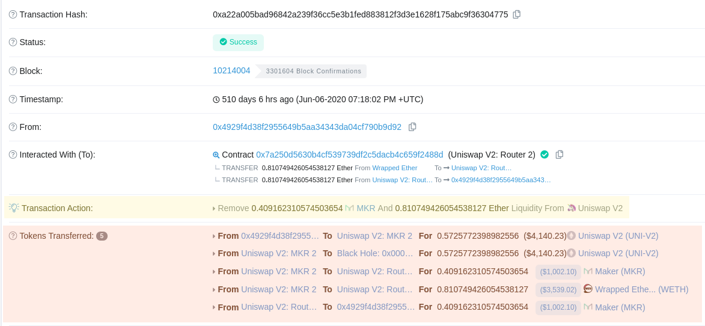
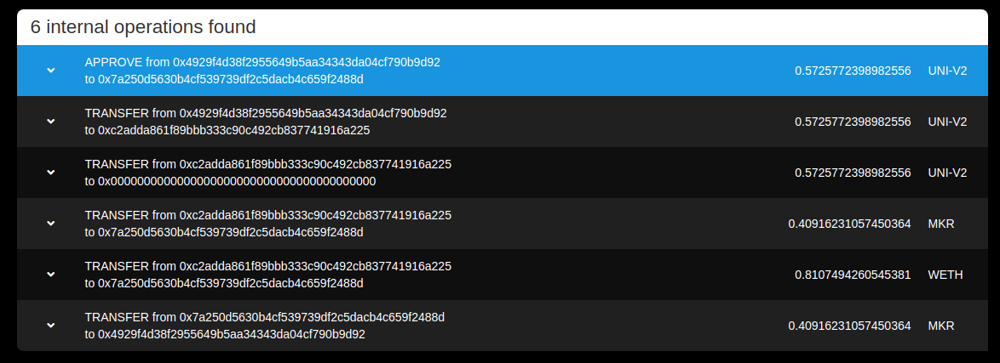
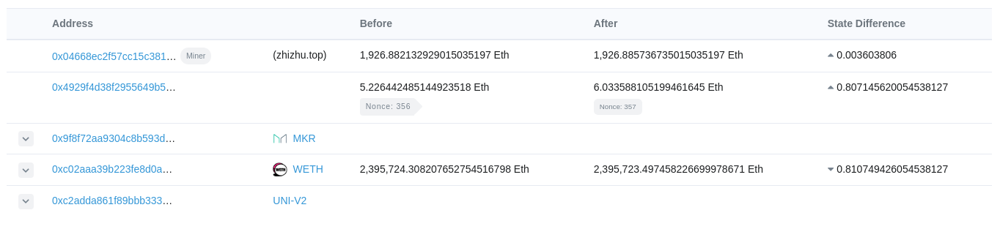
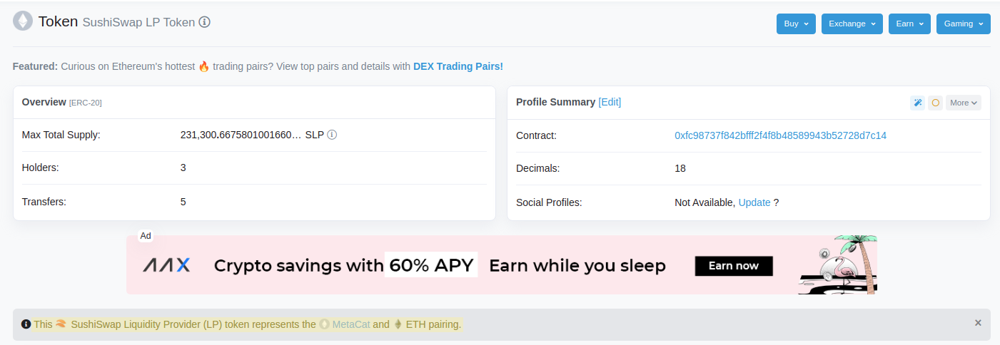

October 31, 2021
Given a transaction that interacts with a liquidity pool, how can we deduce the specific account action (swap vs. LP add/remove and token pair) that was taken using only the transaction data?
We are currently researching transactions that interact with the following protocols:
A random account which has interacted with various services was picked randomly from a recent block, at address:
0x4929f4d38f2955649b5aa34343da04cf790b9d92
The following transactions it sent will be referenced:
| Action | Tx Hash |
|---|---|
| Uniswap V2: Remove 0.41 MKR and 0.81 ETH Liquidity | 0xa22a00...304775 |
| Uniswap V2: Supply 2474.15 WILD and 0.985 ETH Liquidity | 0x64f98a...e67548 |
| Uniswap V3: Swap 0.75 ETH for 2050.50 WILD and 0.25 ETH for 696.65 WILD | 0x817f4a...a51a89 |
| SushiSwap: Swap 1.63 COMP for 0.12 ETH | 0x41f977...0ac0b5 |
We know that account actions can be inferred from raw transactions not only on principle but also because Etherscan does it, as seen below under Complications regarding transaction 0xa22a00...304775, correctly identifying the account action (removing liquidity) and the tokens in question (ETH and MKR). This transaction involves the user interacting with the Uniswap v2 Router contract at 0x7a250d...f2488d.
For our problem, we have only an address, and it is necessary to decode the transaction input data and/or logs in order to reason about the underlying trade represented by a given transaction (which coins were swapped, whether wETH was burnt, etc). It is not easy to do this, though Etherscan is able to do it as shown in the Transaction Action field.
Below, in yellow: Etherscan’s computed “Transaction Action” field parsing the account action from a transaction (not available via API); in red: ERC20 transfers involved in the transaction.

This is not exposed by the API, and has been requested many times, enough that Etherscan has commented on it:
We unfortunately do not have an endpoint that returns the “Transaction Action” information at this point of time. It is a popular one by request, and we will definitely consider to add it in a future update.
—Etherscan Support
Thus, it seems to be nontrivial to decode the account action from a raw transaction, and this will involve reproducing logic similar to that of Etherscan’s Transaction Action field.
In addition, because each liquidity pair (at least on Uniswap) has its own dedicated contract, it is also not feasible to simply look at an address’s interactions with a single contract to gather liquidity provision trades. It would be necessary to load a list of all Uniswap LP contracts for each token pair and then cross-reference an account’s ERC20 token transfers with each contract address using the following Etherscan API call:
`https://api.etherscan.io/api
?module=account
&action=tokentx
&address=${address}
&contractAddress=${pairLPContractAddress}`And this does not appear to be a sustainable approach.
Despite these complications, in general, it is possible to find all of a user’s account actions on a protocol, without distinguishing the specific action or learning much about it, by loading all of an address’s transactions (after a given block height, for a fixed lookback period) and searching the user’s transactions for interactions with the protocol’s routing contract.
Once logic to decode account actions from raw transactions is established, it will be possible to parse these transactions to understand whether they are swaps or adding/removing liquidity, and the underlying token pair, etc.
For now, it is recommended to simply count the number of trades on a protocol and use this as an initial stat until a way to decode transactions is known.
To count the number of SushiSwap transactions our test trader, 0x4929f4...0b9d92, has made, we simply count their interactions with the SushiSwap routing contract, 0xd9e1cE...378B9F.
An address’s transactions can be read for free, up to 5 requests per second, from the following endpoint:
`https://api.etherscan.io/api
?module=account
&action=txlist
&address=0x4929f4d38f2955649b5aa34343da04cf790b9d92`It is trivial to count the number of trades (liquidity provision and swaps) the user has made like so:
const address = `0x4929f4d38f2955649b5aa34343da04cf790b9d92`;
const transactionsRequest = await fetch(
`https://api.etherscan.io/api?module=account&action=txlist&address=${address}`
);
const transactions = await transactionsRequest.json();
const trades = transactions.result.filter(
(tx) => tx.to == '0xd9e1ce17f2641f24ae83637ab66a2cca9c378b9f'
);
console.log(`User ${address} made ${trades.length} SushiSwap trades!`);
// User 0x4929f4d38f2955649b5aa34343da04cf790b9d92 made 64 SushiSwap trades!Ultimately it will not be ideal to depend only on lightweight free APIs, and the service will likely call for setting up a complete Ethereum node and querying it for data directly rather than relying on Etherscan and other services.
It will also be necessary to learn more about how to reliably decode raw transactions and read underlying trade data from them, and some writing of particular interest to this research is this blog post by Diran Li. It is certainly possible and is just a matter of time investment.
Various block explorers are capable of simulating internal transactions and/or decoding input data.
Below: Ethplorer displaying the internal transactions for tx 0xa22a00...304775.

Below: The state changes for the same transaction as above.

Below (highlighted): Etherscan identifying the pair a given SushiSwap LP token represents, here the MCAT/ETH SushiSwap LP token 0xfc9873...8d7c14.
